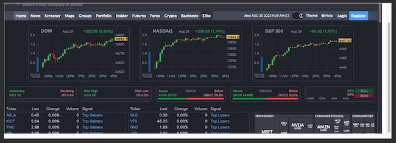
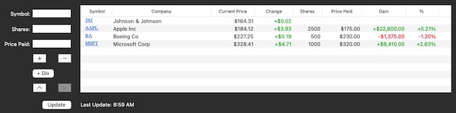
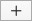
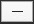
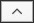
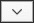
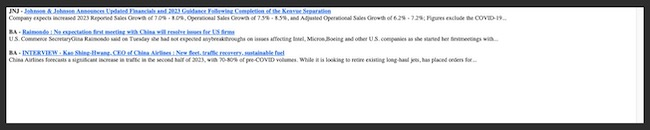

StockTracker Help |
Usage
Website Display

The top portion of StockTracker displays a user-selectable web page. This is useful for seeing updates to market indices and other stock information.Portfolio Table

Stock portfolio data is entered and displayed here. The current price, change, gain, and gain percentage are updated automatically at the rate specified in the preferences. Updates can also be triggered manually by clicking the Update button. Clicking on the stock symbol will open the Yahoo Finance page for that stock in the default browser.To add a stock to the table:
- Enter the stock symbol (e.g., AAPL, MSFT, etc.) in the Symbol box.
- Enter the number of shares owned in the Shares box.
- Enter the purchase price in the Price Paid box.
- Press the  button.
- Enter the stock symbol (e.g., JNJ) in the Symbol box.
- Enter zero for the number of shares owned in the Shares box.
- Leave the Price Paid box empty or blank.
- Press the button.
Dividend payments can be included in the gain/loss calculation for each stock. To enter each dividend:
- Enter the stock symbol in the Symbol box.
- Enter the dividend amount in the Price Paid box.
- Press the button.
- Select the line containing the stock to delete.
- Press the  button.
- Select the line containing the stock to move.
- Press the  button.
- Select the line containing the stock to move.
- Press the  button.
News Feed

The news feed displays the available headlines and short summaries for each headline for every stock in the portfolio table. General market news summaries are also displayed in the news feed. Clicking on a headline will open that story in the default web browser.